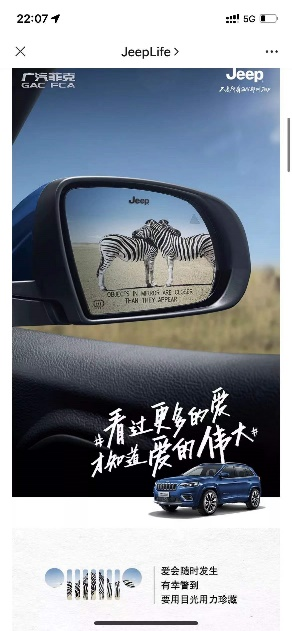
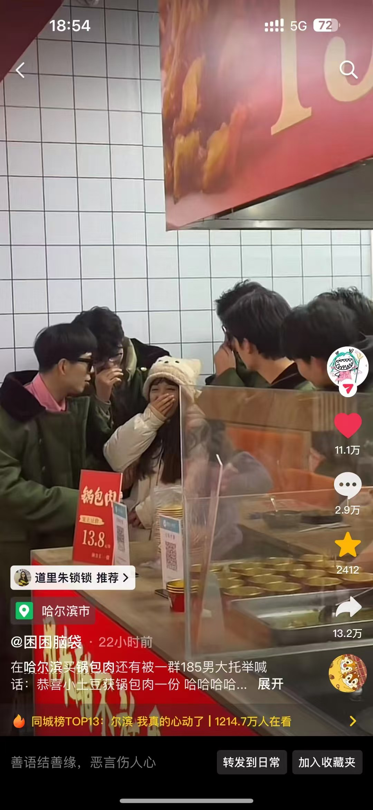

01 / SHANGHAI · BRAND
从公众号，
走到抖音。
在上海广告公司 3 年，参与奔驰、宝马、雅诗兰黛等品牌项目。亲历公众号到短视频的平台迁移，也学会让品牌表达跟上新的内容语境。
品牌项目 · 内容策划 · 平台运营

从公众号时代到抖音时代，
我一直在做一件事：
把想法做成结果。
在上海广告公司工作 3 年，参与过奔驰、宝马、雅诗兰黛等品牌项目，完整经历了内容平台和营销方式的变化。
后来独立操盘抖音本地生活项目，也做过直播、达人探店、线下活动和事件营销。线上策划、内容创作、获客转化到落地执行，我都亲自走过。
我擅长的是把线上线下连起来：找到注意力、创造内容、完成转化，最后把事情真正落地。

在上海广告公司 3 年，参与奔驰、宝马、雅诗兰黛等品牌项目。亲历公众号到短视频的平台迁移，也学会让品牌表达跟上新的内容语境。

独立操盘年成交额 3000 万的抖音本地生活项目，单场直播最高成交 200 万。从账号运营、达人探店到直播转化，把内容变成真实生意。

哈尔滨爆火期间，做过播放量达 5000 万的“185 大帅哥”事件营销。好内容要懂平台，更要懂人为什么愿意分享。

从线上传播到线下布场与执行，我喜欢把屏幕里的热度带进真实空间，让体验、内容与生意彼此连接。
以 AI 为起点，
让靠谱的人相遇，
让好的想法发生。
在做新青年AI社团之前，我参加过上百场沙龙。我知道一次高质量、有信任感的线下交流，能让人认识新伙伴、打开新认知，也能让一句“要不我们试试”真的变成一件事。
现在，我想在哈尔滨把这样的连接持续做下去。和大家一起，真正点燃哈尔滨的 AI 之火，做有意义、有价值的事。